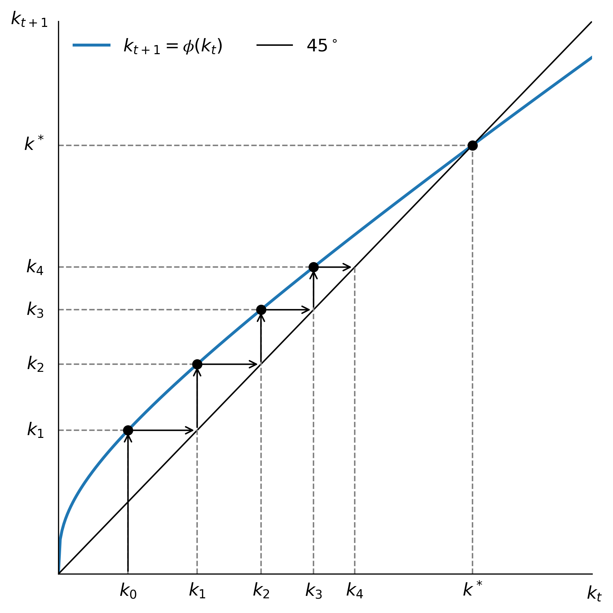
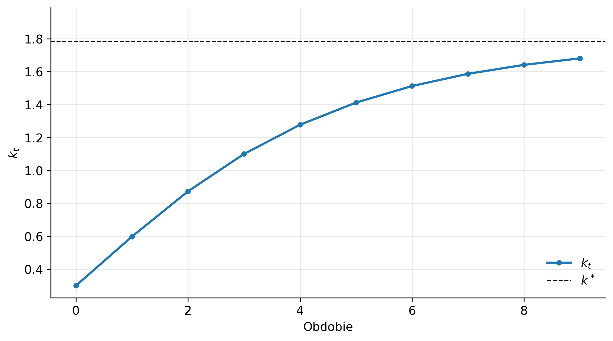
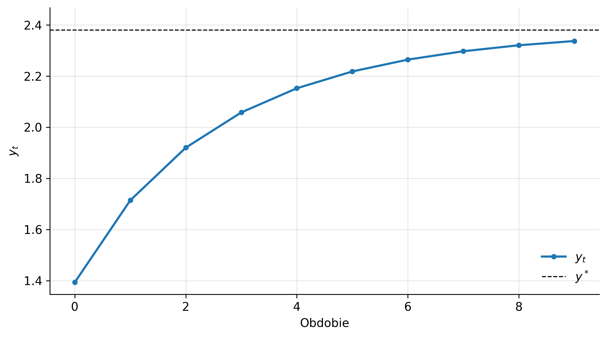
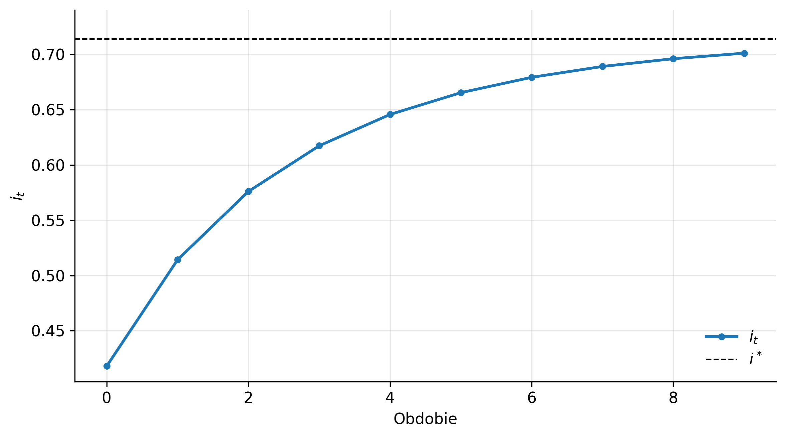
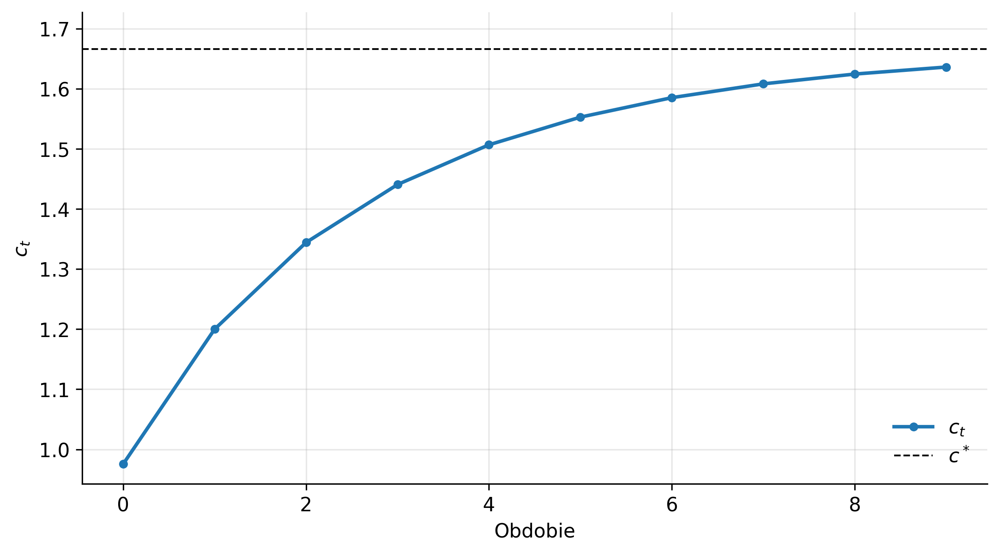
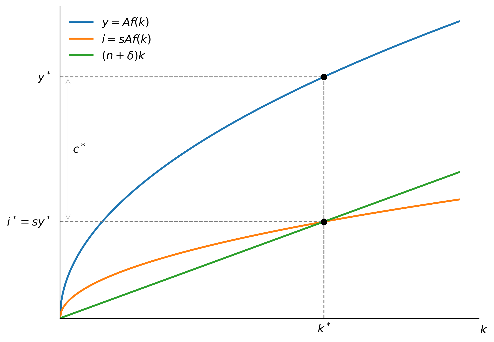
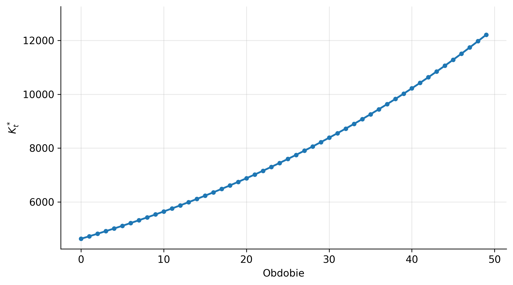
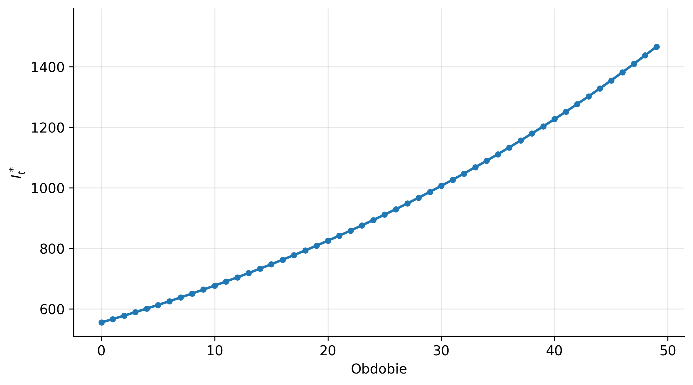
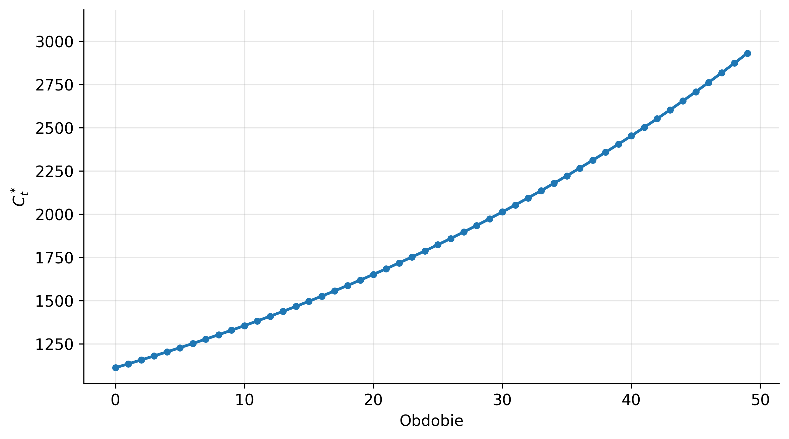
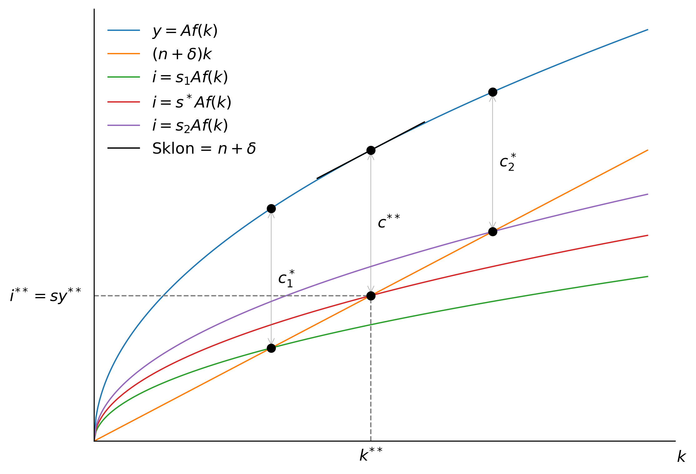

14. Úvod do teórie rastu#
Pri pohľade na dlhodobý hospodársky vývoj krajín možno rozlíšiť tri charakteristické rastové príbehy.
Vyspelé ekonomiky, medzi ktoré patria Spojené štáty a krajiny západnej Európy, zaznamenávali počas veľmi dlhého obdobia relatívne stabilný rast reálneho HDP na obyvateľa. Priemerná ročná miera rastu HDP na obyvateľa dosahovala v USA od konca občianskej vojny v 19. storočí až po globálnu finančnú krízu v roku 2008 približne 2 %. Aj relatívne nízke tempo rastu, ak pretrváva mnoho desaťročí, vedie k obrovskému kumulatívnemu zvýšeniu životnej úrovne. Dnešné veľké rozdiely v HDP na obyvateľa sú preto do značnej miery výsledkom rozdielneho hospodárskeho vývoja počas dlhého obdobia. Ekonomický rast pritom zohráva významnú úlohu pri zlepšovaní materiálnych životných podmienok.
Konvergujúce ekonomiky začínali s podstatne nižšou úrovňou HDP na obyvateľa, ale počas určitého obdobia rástli výrazne rýchlejšie ako vyspelé ekonomiky. Medzi najvýraznejšie historické príklady patria ekonomiky východnej Ázie. Japonsko, Singapur, Hongkong či Južná Kórea dokázali počas povojnových desaťročí výrazne zmenšiť rozdiel v životnej úrovni voči najvyspelejším ekonomikám. Dnes patria medzi ekonomiky s vysokou úrovňou HDP na obyvateľa.
Ekonomiky s pomalou alebo neúspešnou konvergenciou zostávajú napriek hospodárskemu rastu relatívne chudobné. Ich HDP na obyvateľa môže rásť, jeho rast však nestačí na výraznejšie približovanie sa k vyspelým ekonomikám. V jednotlivých obdobiach môžu niektoré z týchto ekonomík zaznamenať aj dlhšie obdobia stagnácie alebo poklesu životnej úrovne.
- Konvergencia
Konvergenciou budeme označovať proces, pri ktorom chudobnejšia ekonomika rastie rýchlejšie ako bohatšia ekonomika, takže sa rozdiel v ich HDP na obyvateľa postupne zmenšuje.
Slovenská ekonomika predstavuje ďalší zaujímavý príklad konvergencie. Podobne ako ostatné postkomunistické ekonomiky strednej a východnej Európy vstupovalo Slovensko do obdobia transformácie s podstatne nižšou úrovňou HDP na obyvateľa než západoeurópske ekonomiky. HDP na obyvateľa prepočítaný paritou kúpnej sily dosahoval v polovici 90. rokov minulého storočia približne 51 % priemernej úrovne EÚ.
Ako vyplýva z Obr. 13.8, slovenská ekonomika rástla mimoriadne rýchlo najmä v období pred globálnou finančnou krízou, keď sa HDP na obyvateľa prepočítaný pomocou parity kúpnej sily zvýšil približne na tri štvrtiny európskeho priemeru. Slovenský HDP na obyvateľa sa následne pohyboval približne medzi 70 % a 80 % priemeru EÚ a do roku 2025 nedošlo k ďalšiemu významnému približovaniu.
Slovenská skúsenosť tak obsahuje prvky dvoch odlišných rastových príbehov. Rýchly rast a približovanie sa k vyspelejším ekonomikám pripomínajú konvergenčný rast, aký v minulosti zaznamenali úspešné ekonomiky východnej Ázie. Následné spomalenie konvergencie však ukazuje, že rýchly rast nemusí automaticky pokračovať navždy. Ako ukazuje Obr. 13.12, priemerné tempo rastu HDP na obyvateľa bolo pred globálnou finančnou krízou výrazne vyššie ako v nasledujúcich obdobiach. V období pred globálnou finančnou krízou bol priemerný rast HDP na obyvateľa vysoko nad 2 %, v období medzi globálnou finančnou krízou a pandémiou COVID-19 mierne nad 2 % a v súčasnom období dokonca pod 2 %.
Tieto rozdielne skúsenosti predstavujú základné otázky teórie ekonomického rastu. Prečo niektoré ekonomiky dokážu dlhodobo zvyšovať životnú úroveň? Prečo chudobnejšie ekonomiky niekedy rýchlo dobiehajú bohatšie krajiny, zatiaľ čo iné zaostávajú? Akú úlohu pri ekonomickom raste zohrávajú akumulácia kapitálu, miera sporenia, populačný vývoj a rast produktivity? A do akej miery môže dlhodobý ekonomický rast ovplyvniť hospodárska politika?
Konštrukcia teórie, ktorá nám umožní na tieto otázky odpovedať, je predmetom tejto a nasledujúcej kapitoly. Teória ekonomického rastu vysvetľuje vývoj ekonomiky z dlhodobého hľadiska. Neskôr ju doplníme teóriou hospodárskych cyklov, ktorá sa sústreďuje na krátkodobé výkyvy ekonomickej aktivity.
14.1. Solowov model rastu#
Na vysvetlenie dlhodobých trendov v ekonomike sa využíva model, ktorý nezávisle od seba prezentovali Solow [Sol56] a Swan [Swa56]. Model budeme ďalej označovať ako Solowov model rastu.
Od kapitoly Voľný čas a spotreba sme predpokladali, že výstup ekonomiky je kompozitný statok, ktorý predstavuje celkovú produkciu tovarov a služieb. Statok je vyrábaný firmami a spotrebovávaný spotrebiteľmi. Predpokladáme zatvorenú ekonomiku bez vlády.
14.1.1. Produkčná funkcia#
Technologické možnosti firiem sú opísané makroekonomickou produkčnou funkciou, ktorú sme predstavili v časti Makroekonomické vlastnosti produkčnej funkcie.
Zopakujme, že vstupmi produkčnej funkcie sú kapitál \(K\) a práca \(N\). Efektívnosť využívania vstupov vo výrobe vyjadruje celková produktivita faktorov \(A\).
Z hľadiska dlhodobého ekonomického rastu celkovú produktivitu faktorov \(A\) interpretujeme ako úroveň technológie.
O produkčnej funkcii (2.6) predpokladáme tieto vlastnosti:
je rastúca v oboch vstupoch, kapitáli a práci,
je konkávna,
elasticita výstupu podľa celkovej produktivity faktorov sa rovná 1,
prechádza začiatkom súradnicového systému,
má konštantné výnosy z rozsahu.
Vďaka konštantným výnosom z rozsahu možno produkčnú funkciu vyjadriť v intenzívnom tvare (2.18).
Intenzívny kapitál \(k\) a intenzívny výstup yyy sú vyjadrené na jednotku práce. Ak predpokladáme konštantný počet jednotiek práce na obyvateľa, môžeme intenzívny výstup \(y\) interpretovať aj ako HDP na obyvateľa.
14.1.2. Miera rastu práce#
Predpokladáme, že populácia spotrebiteľov rastie konštantnou mierou \(n\). Keďže predpokladáme konštantný počet jednotiek práce na obyvateľa, rovnakou mierou rastie aj práca:
Podľa konvencie tejto učebnice premenná označená apostrofom predstavuje hodnotu v nasledujúcom období; \(N'\) je práca v ďalšom období.
14.1.3. Úspory#
V predchádzajúcich modeloch sme ukázali, že rovnováha na jednotlivých trhoch zabezpečuje, aby sa zároveň spĺňali identity systému národných účtov. Aplikovaním Walrasovho zákona (Walrasov zákon) sme napríklad v Statický model všeobecnej rovnováhy ukázali, že rovnováha na trhu práce vedie k rovnosti medzi vytvoreným a použitým výstupom. Podobne sme v Model prídelovej ekonomiky a nedokonalosti na finančných trhoch ukázali súvislosť medzi rovnováhou na finančnom trhu, úsporami a použitím príjmu.
V Solowovom modeli nebudeme konkurenčnú rovnováhu jednotlivých trhov explicitne odvodzovať. Správanie spotrebiteľov zjednodušíme predpokladom, že v každom období usporia konštantný podiel \(s\) svojho príjmu:
Podiel výstupu \(s\), ktorý spotrebitelia usporia, nazývame mierou sporenia. Predpokladáme, že:
Predpokladáme pritom, že trhy sú v rovnováhe, a preto sa musia spĺňať aj príslušné identity systému národných účtov. Keďže ekonomika je zatvorená a neuvažujeme vládu, jej bežný účet sa rovná nule a agregátne úspory sa musia rovnať agregátnym investíciám:
čo zodpovedá identite úspor a investícií (10.4).
Z identity rozdelenia agregovaného príjmu (10.3) vyjadríme reálnu spotrebu. Ekonomika je uzavretá, a preto sa čisté príjmy faktorov a čisté jednostranné transfery zo zahraničia rovnajú nule. V modeli neuvažujeme vládu, takže vládne nákupy sa rovnajú nule. Identitu rozdelenia agregovaného príjmu môžeme preto vyjadriť v tvare:
Kombináciou (14.3) a (14.4) získame
Z každej jednotky výstupu spotrebitelia usporia podiel \(s\) a spotrebujú podiel \(1-s\).
Zopakujme, že hrubé súkromné investície (Hrubé investície) pozostávajú z čistých investícií (Čisté investície) a odpisov (Odpisy).
Čisté investície zvyšujú kapitál \(K\); rovnajú sa zmene stavu kapitálu \(K'-K\).
Predpokladajme, že v každom období sa znehodnotí konštantný podiel \(\delta\) existujúceho kapitálu. Odpisy sa preto rovnajú \(\delta K\). Podiel existujúceho kapitálu, ktorý sa počas jedného obdobia opotrebuje, \(\delta\), nazývame mierou znehodnotenia kapitálu.
Hrubé súkromné investície sú súčtom čistých investícií a odpisov:
V základnej verzii Solowovho modelu predpokladáme, že úroveň technológie \(A\) je konštantná. Tento predpoklad zmeníme v ďalšej kapitole.
14.2. Základná rovnica Solowovho modelu#
Z rovnice hrubých súkromných investícií (14.6) vyjadrime kapitál v nasledujúcom období
Za hrubé súkromné investície dosadíme hrubé súkromné úspory z identity (14.3)
ktoré ďalej zapíšeme podľa (14.2):
Za reálny HDP dosaďme produkčnú funkciu (2.6) a prehoďme poradie členov na pravej strane:
Ak chceme skonštruovať model, ktorý má vysvetliť rast v rôzne veľkých ekonomikách, je výhodné vyjadriť dynamiku premenných v intenzívnom tvare podelením prácou \(N\):
Za predpokladu konštantných výnosov z rozsahu, produkčná funkcia v intenzívnom tvare je (2.18), kde \(\frac{K}{N}=k\). Preto rovnicu môžeme zapísať v tvare
Z formulácie rastu práce (14.1) vieme vyjadriť prácu:
Po dosadení
Rovnako ako v prvom období, aj v nasledovnom období je intenzívny kapitál
Po dosadení získame základnú rovnicu Solowovho modelu:
Základná rovnica Solowovho modelu vyjadruje dynamiku intenzívneho kapitálu \(k\). Intenzívny kapitál v nasledujúcom období vypočítame využitím kapitálu v prítomnom období \(k\) a parametrov miery rastu práce \(n\), úrovne technológie \(A\), miery sporenia \(s\) a miery znehodnotenia kapitálu \(\delta\).
14.3. Grafická interpretácia základnej rovnice Solowovho modelu#
Označme funkciu pravej strany základnej rovnice Solowovho modelu (14.7) symbolom \(\phi(k)\),
Na Obr. 14.1 je zobrazená funkcia \(\phi(k)\) modrou čiarou. Funkcia je rastúca a keďže produkčná funkcia \(Af(k)\) prvom člene je konkávna, funkcia \(\phi(k)\) je konkávna. Funkcia vychádza zo začiatku súradnicového systému.
O uvedenom môžeme presvedčiť za predpokladu, že \(\phi(k)\) je dvakrát diferencovateľaná. Platí:
a
Využitím základnej rovnice Solowovho modelu môžeme definovať stav, keď sa intenzívny kapitál nemení, t.j. intenzívny kapitál v nasledujúcom období sa rovná kapitálu v prítomnom období, \(k′ = k\). Hovoríme o ustálenom stave.
Aby sme vyjadrili hodnotu intenzívneho kapitálu v ustálenom stave, zobrazíme priamku, ktorá prislúcha rovnosti \(k′ = k\). Priamka zobrazená čiernou farbou vychádza zo začiatku súradnicového systému a zviera s osami \(45^\circ\) uhol. V bodoch kde sa priamka pretne s funkciou \(\phi(k)\) sa realizuje rovnica (14.7) a zároveň \(k′ = k\). V tomto bode je hodnota intenzívneho kapitálu v ustálenom stave.
Na Obr. 14.1 sa \(\phi(k)\) pretne s priamkou \(k'=k\) v dvoch bodoch. Prvý je v začiatku súradnicového systému, \(k=0\). Druhý je označený hviezdičkou \(k*\).
Dynamika intenzívneho kapitálu závisí od hodnoty v prítomnom období. Nech \(k_0\) na Obr. 14.1 je množstvo prítomného intenzívneho kapitálu. Podľa základnej rovnice Solowovho modelu (14.7) vieme vypočítať hodnotu intenzívneho kapitálu pracujúceho v ďalšom období. Ak ju označíme \(k_1\), platí:
Graficky určíme \(k_1\) tak, že z hodnoty \(k_0\) na horizontálnej osi postupujeme vertikálne k funkcii \(\phi(k)\). Funkčná hodnota \(\phi(k_0)\) na vertikálnej osi predstavuje kapitál \(k_1\) v nasledujúcom období.
Aby sme mohli hodnotu \(k_1\) použiť ako kapitál na horizontálnej osi pri výpočte ďalšieho obdobia, využijeme priamku \(k'=k\). Keďže táto priamka zviera s oboma osami uhol \(45^\circ\), rovnaká hodnota má na oboch osiach rovnakú vzdialenosť od začiatku súradnicového systému. Horizontálnym posunom od funkcie \(\phi(k)\) k priamke \(k'=k\) preto prenesieme hodnotu \(k_1\) z vertikálnej osi na horizontálnu os. Ak \(0<k_0<k^*\) hodnota \(k1\) je väčšia ako \(k0\). Intenzívny kapitál rastie.
Rovnaký postup môžeme zopakovať. Dosadením hodnoty \(k_1\) do funkcie \(\phi(k)\) získame hodnotu
dosadením \(k_2\) $\( k_3=\phi(k_2), \)\( a všeobecne \)\( k_{t+1}=\phi(k_t). \)$
Opakovaním tohto postupu základná rovnica Solowovho modelu generuje postupnosť \(k_0,k_1,k_2,k_3,\ldots\)
Intenzívny kapitál rastie, ak štartovacia hodnota \(0<k_0\) je nižšia ako \(k^*\) a naopak klesá, ak \(k_0>k^*\) a približuje sa k ustálenému stavu \(k^*\).
Ak štartovacia hodnota \(k_0=k^*\), intenzívny kapitál je od začiatku v ustálenom stave \(k^*\) a v čase sa nemení. Rovnaké platí, ak \(k_0=0\): ak ekonomika nemá žiadny kapitál, pri našich predpokladoch nevyrába, nevytvára úspory ani investície a kapitál zostáva nulový.
Rozdiel medzi ustálenými stavmi \(k=0\) a \(k=k^*\) je, že \(k^*\) je stabilný. Ak aj na začiatku intenzívny kapitál nebol v ustálenom stave \(0<k_0 \ne k^*\), časom sa začne približovať k ustálenému stavu \(k^*\).
Ustálený stav \(k=0\) túto vlastnosť nemá. Ak ekonomika začína s ľubovoľnou kladnou zásobou kapitálu, jej intenzívny kapitál sa od nulového ustáleného stavu vzďaľuje. V ďalšom výklade sa preto budeme zaoberať ustáleným stavom \(k^*\) a budeme predpokladať \(k>0\).

Obr. 14.1 Grafická interpretácia základnej rovnice Solowovho modelu#
14.4. Časové rady#
Základná rovnica Solowovho modelu (14.7) generuje postupnosť \(k_0,k_1,k_2,k_3,\ldots\), ktorá má vlastnosti časového radu. Časový rad intenzívneho kapitálu vygenerovaný rovnicou (14.7) je zobrazený na Obr. 14.2. Pri štartovacej hodnote \(0<k_0<k^*\) sa intenzívny kapitál každým ďalším obdobím zväčšuje a približuje sa k ustálenému stavu \(k^*\) zobrazenému prerušovanou čiernou čiarou. Platí, že čím bližšie je \(k\) k ustálenému stavu \(k^*\) tým menšie sú jeho prírastky v každom ďalšom období.
Intenzívny kapitál preto rastie čoraz pomalšie, až jeho prírastky pri približovaní sa k ustálenému stavu smerujú k nule.
Opačný proces nastáva, ak je štartovacia hodnota \(k_0>k^*\). Intenzívny kapitál v každom ďalšom období klesá a postupne sa približuje k ustálenému stavu \(k^*\), pričom jeho pokles je čoraz menší.
Ak je štartovacia hodnota \(k_0=k^*\), ekonomika sa už nachádza v ustálenom stave. Intenzívny kapitál sa v čase nemení, \(k_t=k^*\) pre každé obdobie, a jeho časový rad má preto tvar vodorovnej čiary (prerušovaná čiara na Obr. 14.2).

Obr. 14.2 Časový rad intenzívneho kapitálu#
Od kapitálu v intenzívnom tvare \(k\) závisia aj ďalšie endogénne premenné: intenzívny výstup
intenzívne investície
a intenzívna spotreba
Keďže v zatvorenej ekonomike platí \(S=I\), intenzívne investície \(i\) sa rovnajú intenzívnym úsporám \(sy\).
Všetky tri intenzívne premenné rastú s \(k\). Ak je intenzívny kapitál \(k\) vyjadrený časovým radom, potom aj intenzívny výstup \(y\), investície \(i\) a spotreba \(c\) vytvárajú časové rady.
Platí:
Ak kapitál \(k\) v čase rastie, rastú aj \(y\), \(i\) a \(c\).
Ak kapitál \(k\) v čase klesá, klesajú aj \(y\), \(i\) a \(c\).
Ak sa kapitál \(k\) v čase nemení, nemenia sa ani \(y\), \(i\) a \(c\).
Z posledného tvrdenia vyplýva, že ak je kapitál v ustálenom stave \(k=k^*\), potom sú v ustálenom stave aj výstup, investície a spotreba. Ich ustálené hodnoty označujeme hviezdičkou: \(k^*,y^*,i^*=sy^*,c^*\).
Keď sa približovanie intenzívneho kapitálu \(k\) k ustálenému stavu \(k^*\) spomaľuje, spomaľuje sa aj približovanie ostatných uvažovaných premenných k ich ustáleným hodnotám.
Časové rady intenzívneho výstupu, investícií a spotreby sú zobrazené na Obr. 14.3–Obr. 14.5. Z grafov vidíme, že ich priebeh je podobný priebehu intenzívneho kapitálu na Obr. 14.2.

Obr. 14.3 Časový rad intenzívneho výstupu#

Obr. 14.4 Časový rad intenzívnych investícií alebo úspor#

Obr. 14.5 Časový rad intenzívnej spotreby#
14.5. Ustálený stav#
V dynamických ekonomických modeloch závisí hodnota endogénnych premenných v jednom období od ich hodnôt v predchádzajúcom období.
- Ustálený stav
Ustálený stav je stav ekonomiky, v ktorom sa vybrané endogénne premenné v čase nemenia.
Ak danú endogénnu premennú označíme \(x\), v ustálenom stave platí
kde hviezdička označuje hodnotu premennej v ustálenom stave.
Ak dynamiku premennej opisuje rovnica
jej ustálený stav \(x^*\) spĺňa podmienku
Ustálený stav je teda pevný bod dynamického systému: ak sa ekonomika nachádza v ustálenom stave a \(x=x^*\), dynamická rovnica v nasledujúcom období vygeneruje opäť rovnakú hodnotu \(x'=x^*\).
Samotná existencia ustáleného stavu ešte neznamená, že k nemu ekonomika bude smerovať. Ak sa ekonomika po odchýlení od ustáleného stavu postupne vracia späť, ustálený stav nazývame stabilným. Ak sa od neho naopak ďalej vzďaľuje, ustálený stav je nestabilný.
V základnom Solowovom modeli sú v ustálenom stave konštantné intenzívne premenné \(k\), \(y\), \(i\) a \(c\). Existujú dva ustálené stavy. Kladný ustálený stav \(k^*,y^*,i^*=sy^*,c^*\) je stabilný, zatiaľ čo nulový ustálený stav \(k=y=i=c=0\) je nestabilný.
- Prechodný stav
Ak sa ekonomika nenachádza v ustálenom stave, nachádza sa v prechodnom stave. V prechodnom stave sa vybrané endogénne premenné v čase menia. V základnom Solowovom modeli sa ekonomika v prechodnom stave postupne približuje ku kladnému stabilnému ustálenému stavu.
- Konvergencia k ustálenému stavu
Ak sa hodnota endogénnej premennej \(x_t\) v čase približuje k jej hodnote v ustálenom stave \(x^*\), hovoríme, že premenná \(x\) konverguje k ustálenému stavu.
Konvergenciu k ustálenému stavu možno zapísať limitou
Časové rady na Obr. 14.2–Obr. 14.5 zodpovedajú ekonomike v prechodnom stave. Všetky štyri premenné konvergujú k svojim hodnotám v ustálenom stave.
14.6. Grafická identifikácia ustáleného stavu#
Pre ustálený stav platí
Po úprave získame rovnicu vhodnú pre grafickú identifikáciu ustáleného stavu v tvare
Na ľavej strane (14.11) sú intenzívne úspory a teda aj investície v ustálenom stave. V ustálenom stave sa investície a úspory rovnajú:
Na oboch stranách (14.11) sú funkcie kapitálu. Funkcia \(sAf(k)\) je rastúca a konkávna a na Obr. 14.6 je zobrazená oranžovou čiarou. Funkcia \((\delta+n)k\) zobrazená zelenou je lineárna rastúca. Obe funkcie vychádzajú zo začiatku súradnicového systému. Na Obr. 14.6 je tiež modrou farbou zobrazená produkčná funkcia \(Af(k)\).
Rovnica (14.11) sa spĺňa v bodoch, v ktorých sa pretíňajú krivky \(sAf(k)\) a \((\delta+n)k\). Priesečníky identifikujú ustálený stav. Zaujíma nás kladný \(k^*\), ktorý identifikujeme na horizontálnej osi. V bode priesečníka dosahujú investície aj úspory ustálenú hodnotu \(i^*=sy^*\).
Pomocou produkčnej funkcie možno pri kapitáli \(k^*\) získať výstup v ustálenom stave \(y^*=Af(k^*)\). Spotreba v ustálenom stave \(c^*\) je rozdiel medzi výstupom a úsporami, zobrazená vertikálnou dvojšípkou ako vzdialenosť medzi \(y^*\) a \(i^*\).

Obr. 14.6 Grafická identifikácia ustáleného stavu#
14.7. Extenzívne premenné v ustálenom stave#
Extenzívnu premennú získame prenásobením intenzívnej premennej množstvom práce. V ustálenom stave platí.
Upozornenie
Hviezdička pri extenzívnej premennej \(X^*\) označuje jej hodnotu, keď sa ekonomika nachádza v ustálenom stave. Neznamená, že táto hodnota je v čase konštantná.
Aká je dynamika extenzívnych premennýh v ustálenom stave?
Zapíšme extenzívne premenné v nasledujúcom období, pričom zohľadníme definíciu ustáleného stavu, $x’^=x^,
Miera rastu extenzívnej premennej je
Ustálený stav neznamená, že ekonomika prestane rásť. Konštantné zostávajú intenzívne premenné, zatiaľ čo extenzívne rastú spolu s množstvom práce mierou \(n\).
Na Obr. 14.7–Obr. 14.10 sú zobrazené časové rady extenzívnych premenných.

Obr. 14.7 Časový rad extenzívneho kapitálu v ustálenom stave#
Obr. 14.8 Časový rad extenzívneho výstupu v ustálenom stave#

Obr. 14.9 Časový rad extenzívnych investícií alebo úspor v ustálenom stave#

Obr. 14.10 Časový rad extenzívnej spotreby v ustálenom stave#
V ustálenom stave sú intenzívne premenné \(k^*,y^*,i^*,c^*\) konštantné. Extenzívne premenné \(K^*_t,Y^*_t,I^*_t,C^*_t\) sa však v čase menia, pretože množstvo práce \(N_t\) rastie. Hviezdička pri extenzívnej premennej označuje jej hodnotu v ekonomike, ktorá sa nachádza v ustálenom stave, nie jej konštantnú hodnotu.
14.8. Zlaté pravidlo#
Americký ekonóm Edmund Phelps položil otázku: Ak je ekonomika v ustálenom stave, za akých podmienok je intenzívna spotreba maximálna? [Phe61]
Podľa Obr. 14.11 hľadáme takú mieru sporenia, pri ktorej je intenzívna spotreba v ustálenom stave maximálna. Rôzne miery sporenia \(s\) generujú rôzne ustálené stavy, a teda aj rôzne hodnoty spotreby \(c^*\). Na Obr. 14.11 je pri miere sporenia \(s_1\) spotreba \(c_1^*\), pri miere sporenia \(s_2\) spotreba \(c_2^*\) a pri miere sporenia \(s^*\) dosahuje spotreba svoju maximálnu hodnotu \(c^{**}\).
Miera sporenia ovplyvňuje ustálený stav ekonomiky. Keďže všetky intenzívne endogénne premenné možno charakterizovať pomocou intenzívneho kapitálu, každý kladný ustálený stav môžeme charakterizovať príslušnou hodnotou \(k^*\).
Spotreba v ustálenom stave je rozdielom medzi výstupom a úsporami, resp. vzhľadom na rovnosť úspor a investícií medzi výstupom a investíciami:
Za \(y^*\) dosaďme produkčnú funkciu a za \(i^*\) vzťah (14.12). Získame spotrebu v ustálenom stave:
Získali sme tak spotrebu v ustálenom stave \(c^*\) ako funkciu kapitálu v ustálenom stave \(k^*\).
Phelpsov problém môžeme riešiť maximalizáciou (14.13) vzhľadom na \(k^*>0\). Podmienka prvého rádu je
Prvý člen predstavuje intenzívny hraničný produkt kapitálu:
Označme hodnotu kapitálu, pri ktorej je spotreba v ustálenom stave maximálna, \(k^{**}\). Podmienku prvého rádu môžeme zapísať v tvare
Hraničný produkt kapitálu \(mpk\) vyjadruje prírastok výstupu vytvorený dodatočnou jednotkou kapitálu. Časť tohto prírastku vo výške \(\delta\) je potrebná na náhradu znehodnotenia kapitálu. Rozdiel
preto predstavuje čistý výnos z dodatočnej jednotky kapitálu.
Trh dlhopisov a trh kapitálu sú v rovnováhe, ak čistý príjem z dlhopisov sa rovná čistému príjmu z kapitálu. Čistý príjem z dlhopisov je úroková miera.
Intenzívna spotreba v ustálenom stave je teda maximálna vtedy, keď sa čistý výnos z kapitálu, resp. reálna úroková miera, rovná miere rastu práce
Túto podmienku nazývame zlatým pravidlom akumulácie kapitálu.
Hraničný produkt kapitálu je na Obr. 14.11 prezentovaný dotyčnicou produkčnej funkcie zobrazenej modrou farbou. Pri maximálnej spotrebe v ustálenom stave je sklon dotyčnice rovnaký ako sklon oranžovej priamky \((n+\delta)k\).

Obr. 14.11 Zlaté pravidlo#
14.9. Riešené príklady#
Využijeme nasledovné balíky. Balík grafy vytvorený v rámci tejto učebnice obsahuje mnohé funkcie Solowovho modelu. Pred jeho importom potrebujete prekopírovať súbor grafy.py do pracovného priečinka.
import grafy
from sympy import symbols, solve, simplify
import numpy as np
from IPython.display import display, Math
import pandas as pd
14.9.1. Príklad: Ustálený a prechodný stav#
O ekonomike poznáte tieto údaje: úroveň technológie je \(2\), miera sporenia je \(0,3\), miera znehodnotenia kapitálu je \(0,38\) a miera rastu práce je \(0,02\). V súčasnom období je v ekonomike 1000 obyvateľov a extenzívny kapitál je 300. Agregátna produkčná funkcia má Cobbov-Douglasov tvar s konštantnými výnosmi z rozsahu a podielom kapitálu na výstupe \(0,3\).
Vypočítajte hodnoty intenzívneho kapitálu v súčasnom a nasledujúcom období.
Rozhodnite, či je ekonomika v ustálenom stave. Svoje rozhodnutie zdôvodnite.
Odvoďte a vypočítajte hodnotu intenzívneho kapitálu v ustálenom stave.
Vypočítajte intenzívny výstup, investície a spotrebu v súčasnom období a v ustálenom stave.
14.9.1.1. Riešenie#
Intenzívny kapitál v súčasnom období je
Na výpočet intenzívneho kapitálu v nasledujúcom období využijeme základnú rovnicu Solowovho modelu (14.7):
Po dosadení získame
Intenzívny kapitál v súčasnom období je \(0,3\).
Intenzívny kapitál v nasledujúcom období je približne \(0,59\).
Ak by bola ekonomika v ustálenom stave, intenzívny kapitál by sa v čase nemenil. V skutočnosti intenzívny kapitál v nasledujúcom období vzrástol z hodnoty \(0,3\) na približne \(0,59\). Ekonomika sa preto nenachádza v ustálenom stave, ale v prechodnom stave.
Rovnica identifikácie ustáleného stavu je (14.11). Ak dosadíme Cobbov-Douglasov tvar produkčnej funkcie, môžeme vyjadriť intenzívny kapitál v ustálenom stave:
Postupnými úpravami získame
a teda
Po dosadení
Intenzívny kapitál sa bude postupne približovať zo štartovacej hodnoty \(0,3\) k ustálenému stavu \(1,78\).
Ak dosadíme intenzívny kapitál v súčasnom období do (14.8)–(14.10), získame intenzívny výstup v súčasnom období
intenzívne investície v súčasnom období
a intenzívnu spotrebu v súčasnom období
Analogicky môžeme vypočítať intenzívne premenné v ustálenom stave. Pri výpočte investícií a spotreby môžeme využiť aj (14.12) a (14.13).
Intenzívny výstup v ustálenom stave je
Intenzívne investície v ustálenom stave sú
Rovnakú hodnotu získame z podmienky ustáleného stavu:
Intenzívna spotreba v ustálenom stave je
Rovnaký výsledok získame ako rozdiel medzi výstupom a investíciami:
Výsledky môžeme zhrnúť v nasledujúcej tabuľke:
Endogénna premenná |
Symbol |
Súčasné obdobie |
Ustálený stav |
|---|---|---|---|
Intenzívny kapitál |
\(k\) |
0,30 |
1,78 |
Intenzívny výstup |
\(y\) |
1,39 |
2,38 |
Intenzívne investície |
\(i\) |
0,42 |
0,71 |
Intenzívna spotreba |
\(c\) |
0,98 |
1,67 |
Keďže je intenzívny kapitál v súčasnom období nižší ako v ustálenom stave, \(k<k^*\), ekonomika bude počas prechodného obdobia akumulovať kapitál. Spolu s intenzívnym kapitálom sa budú zvyšovať aj intenzívny výstup, investície a spotreba, až sa priblížia k svojim ustáleným hodnotám.
14.9.1.2. Python#
Pre aplikovanie základnej rovnice Solowovho modelu využijeme funkciu grafy.phi.
V kóde budeme rozlišovať číselné hodnoty premenných a ich symbolický zápis. Číselné hodnoty označíme príponou h a symbolické premenné príponou s.
# Exogénne premenné, hodnoty
Kh=300
Nh=1000
Ah=2
sh=0.3
alphah=0.3
deltah=0.38
nh=0.02
kh=Kh/Nh
khp=grafy.phi(k=kh,A=Ah,alpha=alphah,n=nh,s=sh,delta=deltah
)
print("Intenzívny kapitál v súčasnom období", kh)
print("Intenzívny kapitál v nasledujúcom období", round(khp,2))
Intenzívny kapitál v súčasnom období 0.3
Intenzívny kapitál v nasledujúcom období 0.59
Nasledujúci kód odvodí intenzívny kapitál v ustálenom stave z (14.11).
# Exogénne premenné, symboly
As,alphas,ns,ss,deltas,k_star=symbols("A,alpha,n,s,delta,k_star",positive=True)
k_us=solve(ss*As*k_star**alphas-(deltas+ns)*k_star,k_star,dict=True)
k_us=k_us[0]
display(k_us[k_star])
Dosadením hodnôt za symboly získame \(k^*\).
# Za symboly dosadíme hodnoty
exogenne=({As:Ah,ss:sh,alphas:alphah,deltas:deltah,ns:nh})
k_us[k_star].subs(exogenne)
Hodnoty intenzívnych premenných možno vypočítať aj pomocou funkcie grafy.us.
display(Math("$[k^*,y^*,i^*,c^*]=$"))
np.round(grafy.us(A=Ah,alpha=alphah,n=nh,s=sh,delta=deltah
),2)
array([1.78, 2.38, 0.71, 1.67])
V balíčku grafy, funkcia grafy.rovnice slúži na aplikáciu rovníc (14.8)–(14.10).
display(Math("$[y,i,c]=$"))
np.round(grafy.rovnice(k=kh,A=Ah,alpha=alphah,s=sh),2)
array([1.39, 0.42, 0.98])
14.9.1.3. Časové rady#
Ak chceme vygenerovať časový rad s \(T\) pozorovaniami intenzívneho kapitálu, môžeme využiť funkciu grafy.rady. Funkcia využíva grafy.phi na generovanie intenzívneho kapitálu. Okrem toho s využitím (14.1) generuje časový rad práce a tiež časový rad úrovne technológie (význam priblížime v nasledovnej kapitole).
k,index,N,*_=grafy.rady(k0=kh,N0=Nh,A0=Ah,alpha=alphah,n=nh,s=sh,delta=deltah,T=10)
y,i,c=grafy.rovnice(k, A=Ah, alpha=alphah, s=sh)
df = pd.DataFrame({"k": k,"y": y,"i": i,"c": c,"N":N},index=index)
df
| k | y | i | c | N | |
|---|---|---|---|---|---|
| 0 | 0.300000 | 1.393691 | 0.418107 | 0.975583 | 1000.000000 |
| 1 | 0.592262 | 1.709166 | 0.512750 | 1.196416 | 1020.000000 |
| 2 | 0.862698 | 1.913320 | 0.573996 | 1.339324 | 1040.400000 |
| 3 | 1.087126 | 2.050756 | 0.615227 | 1.435529 | 1061.208000 |
| 4 | 1.263966 | 2.145609 | 0.643683 | 1.501926 | 1082.432160 |
| 5 | 1.399354 | 2.212118 | 0.663635 | 1.548483 | 1104.080803 |
| 6 | 1.501211 | 2.259241 | 0.677772 | 1.581469 | 1126.162419 |
| 7 | 1.576983 | 2.292863 | 0.687859 | 1.605004 | 1148.685668 |
| 8 | 1.632930 | 2.316969 | 0.695091 | 1.621878 | 1171.659381 |
| 9 | 1.674027 | 2.334311 | 0.700293 | 1.634018 | 1195.092569 |
Pre zobrazenie radov využívame funkciu grafy.plot_model_path. Nasledujúci kód zobrazí Obr. 14.2. Funkcia umožňuje tiež zobrazenie ustáleného stavu, preto ho na začiatku ešte raz vypočítame.
k_us,y_us,i_us,c_us=grafy.us(A=Ah,alpha=alphah,n=nh,s=sh,delta=deltah
)
fig,ax,df=grafy.plot_model_path(
k,
labels=[r"$k_t$"],
ylabel=r"$k_t$",
steady_states={
r"$k^*$": k_us
}
)
Zobrazenie ďalších radov nechávame na čitateľa.
14.9.2. Príklad: Extenzívne premenné v ustálenom stave#
O ekonomike s agregátnou produkčnou funkciou v Cobbovom-Douglasovom tvare poznáte: úroveň technológie (1), mieru sporenia (1/3), podiel kapitálu (1/3), mieru znehodnotenia kapitálu (0,1) a mieru rastu práce (0,02). V súčasnom období žije v ekonomike 1000 obyvateľov. Predpokladáme, že ekonomika je v ustálenom stave.
Vypočítajte hodnoty intenzívnych premenných v ustálenom stave.
Vypočítajte hodnoty extenzívnych premenných v súčasnom období a v nasledovnom období.
Vypočítajte mieru rastu extenzívnych premenných medzi obidvoma obdobiami.
14.9.2.1. Riešenie#
Najprv vypočítame intenzívny kapitál v ustálenom stave. Pre Cobbovu-Douglasovu produkčnú funkciu platí podľa (14.15)
Po dosadení
Intenzívny výstup v ustálenom stave vypočítame z produkčnej funkcie:
Po dosadení
Intenzívne investície v ustálenom stave sú
a teda
Rovnakú hodnotu môžeme overiť pomocou podmienky ustáleného stavu:
Intenzívna spotreba v ustálenom stave je
a teda
Hodnoty intenzívnych premenných v ustálenom stave sú preto približne
Premenná |
Hodnota |
|---|---|
Intenzívny kapitál \(k^*\) |
4,63 |
Intenzívny výstup \(y^*\) |
1,67 |
Intenzívne investície \(i^*\) |
0,56 |
Intenzívna spotreba \(c^*\) |
1,11 |
Extenzívne premenné v súčasnom období
Extenzívnu premennú získame prenásobením intenzívnej premennej množstvom práce. V súčasnom období je
Extenzívny kapitál je
Výstup je
Investície sú
Spotreba je
Extenzívne premenné v nasledujúcom období
Ekonomika je v ustálenom stave, preto sa intenzívne premenné v nasledujúcom období nemenia:
Množstvo práce však rastie mierou \(n=0,02\). V nasledujúcom období preto bude
Extenzívny kapitál v nasledujúcom období je
Výstup je
Investície sú
Spotreba je
Výsledky môžeme zhrnúť v tabuľke:
Extenzívna premenná |
Súčasné obdobie |
Nasledujúce obdobie |
|---|---|---|
Kapitál \(K^*\) |
4629,63 |
4722,22 |
Výstup \(Y^*\) |
1666,67 |
1700,00 |
Investície \(I^*\) |
555,56 |
566,67 |
Spotreba \(C^*\) |
1111,11 |
1133,33 |
14.9.2.1.1. Miera rastu extenzívnych premenných#
Mieru rastu každej extenzívnej premennej môžeme vypočítať ako
Pre kapitál dostaneme
Analogicky pre výstup
pre investície
a pre spotrebu
Všetky extenzívne premenné preto rastú mierou
Hoci sa ekonomika nachádza v ustálenom stave, jej extenzívne premenné sa v čase nezastavia. Intenzívne premenné \(k^*\), \(y^*\), \(i^*\) a \(c^*\) zostávajú konštantné, ale kapitál, výstup, investície a spotreba rastú spolu s množstvom práce mierou \(n=2\,\%\).
14.9.2.2. Python#
V nasledovnom kóde vypočítame ustálený stav intenzívnych premenných.
A=1
s=1/3
alpha=1/3
delta=0.1
n=0.02
N0=1000
k_us,y_us,i_us,c_us=grafy.us(A=A,alpha=alpha,n=n,s=s,delta=delta)
df_us = pd.DataFrame({
"Označenie": ["k*","y*","i*","c*"],
"Premenná": [
"Kapitál",
"Výstup",
"Investície",
"Spotreba"
],
"Hodnota": [
k_us,
y_us,
i_us,
c_us
]
}).set_index("Označenie")
print("Intenzívne premenné v ustálenom stave")
df_us
Intenzívne premenné v ustálenom stave
| Premenná | Hodnota | |
|---|---|---|
| Označenie | ||
| k* | Kapitál | 4.629630 |
| y* | Výstup | 1.666667 |
| i* | Investície | 0.555556 |
| c* | Spotreba | 1.111111 |
Ukážeme hodnoty extenzívnych premenných v súčasnom období a v nasledovnom období.
# Extenzívne premenné
k,index,N,*_ = grafy.rady(k0=k_us,N0=N0,A0=A,alpha=alpha,n=n,s=s,delta=delta,T=50)
y,i,c= grafy.rovnice(k=k,A=A,alpha=alpha,s=s)
K=k*N
Y=y*N
I=i*N
C=c*N
DF = pd.DataFrame({"K*": K,"Y*": Y,"I*": I,"C*": C,"N":N},index=index)
print("Extenzívne premenné v prvých dvoch obdobiach")
DF.head(2)
Extenzívne premenné v prvých dvoch obdobiach
| K* | Y* | I* | C* | N | |
|---|---|---|---|---|---|
| 0 | 4629.629630 | 1666.666667 | 555.555556 | 1111.111111 | 1000.0 |
| 1 | 4722.222222 | 1700.000000 | 566.666667 | 1133.333333 | 1020.0 |
Výpočet mier rastu.
g_DF = DF.pct_change()
print("Miery rastu extenzívnych premenných")
g_DF.iloc[[1]]
Miery rastu extenzívnych premenných
| K* | Y* | I* | C* | N | |
|---|---|---|---|---|---|
| 1 | 0.02 | 0.02 | 0.02 | 0.02 | 0.02 |
14.9.2.3. Graf priebehu časového radu#
Znova môžeme využiť funkciu grafy.plot_model_path na zobrazenie priebehu celého časového radu. Napríklad Obr. 14.8 môžeme získať nasledovným kódom.
fig,ax,df=grafy.plot_model_path(
Y,
ylabel=r"$Y_t$",
)
14.9.2.4. Miery rastu extenzívnych premenných v ďalších obdobiach#
Presvedčme sa, že extenzívne premenné rastú mierou \(n\) v celej dĺžke časových radov.
g_DF.tail()
| K* | Y* | I* | C* | N | |
|---|---|---|---|---|---|
| 45 | 0.02 | 0.02 | 0.02 | 0.02 | 0.02 |
| 46 | 0.02 | 0.02 | 0.02 | 0.02 | 0.02 |
| 47 | 0.02 | 0.02 | 0.02 | 0.02 | 0.02 |
| 48 | 0.02 | 0.02 | 0.02 | 0.02 | 0.02 |
| 49 | 0.02 | 0.02 | 0.02 | 0.02 | 0.02 |
14.9.3. Príklad: Zlaté pravidlo#
Ak je agregovaná produkčná funkcia v Cobbovom-Douglasovom tvare s konštantnými výnosmi z rozsahu, odvoďte, pri akej hodnote miery sporenia je intenzívna spotreba v ustálenom stave maximálna.
14.9.3.1. Riešenie#
Podmienka prvého rádu zlatého pravidla je (14.14):
Pri Cobbovej-Douglasovej produkčnej funkcii
je hraničný produkt kapitálu
Podmienku zlatého pravidla preto môžeme zapísať ako
Intenzívny kapitál v ustálenom stave pri Cobbovej-Douglasovej produkčnej funkcii je podľa (14.15)
Ak má byť ustálený stav zároveň stavom, v ktorom je intenzívna spotreba maximálna, platí
Dosadením do podmienky zlatého pravidla získame
Keďže
dostaneme
Preto
Po vykrátení \(A\) a \(n+\delta\) získame
a teda
Pri Cobbovej-Douglasovej produkčnej funkcii je preto intenzívna spotreba v ustálenom stave maximálna vtedy, keď sa miera sporenia rovná podielu kapitálu na výstupe.
14.9.3.2. Python#
Na odvodenie využijeme symboly, ktoré sme deklarovali v príklade Príklad: Ustálený a prechodný stav. Keďže sme si prepísali kapitál v ustálenom stave k_us, vyjadríme ho ešte raz.
# Odvodenie kapitálu v ustálenom stave ešte raz
k_us=solve(ss*As*k_star**alphas-(deltas+ns)*k_star,k_star,dict=True)
k_us=k_us[0]
s_golden=solve(alphas*As*k_us[k_star]**(alphas-1)-ns-deltas,ss,dict=True)
s_golden=s_golden[0]
print("Miera sporenia v zlatom pravidle")
simplify(s_golden[ss])
Miera sporenia v zlatom pravidle
Keďže sme v kóde deklarovali iba pozitívnosť parametra \(\alpha\), SymPy neuvažuje predpoklad \(0<\alpha<1\), ktorý používame v Cobbovej-Douglasovej produkčnej funkcii. Preto vo výstupe nie je ďalšie zjednodušenie výrazu. Pri \(0<\alpha<1\) však z odvodenia vyplýva (14.16).
14.9.4. Príklad: Kalibrácia Solowovho modelu#
Parametre Solowovho modelu môžeme priblížiť pomocou pozorovaných makroekonomických údajov. V databáze Penn World Table (PWT) vypočítame priemerný podiel investícií na HDP, podiel práce na HDP, mieru znehodnotenia kapitálu a mieru rastu populácie.
Keďže v Solowovom modeli platí \(S=I\), mieru sporenia \(s\) kalibrujeme pomocou priemerného podielu investícií na HDP. Podiel kapitálu na výstupe \(\alpha\) získame ako zvyšok podielu práce na výstupe do 1. Mieru rastu práce \(n\) aproximujeme mierou rastu populácie.
Upozornenie
Solowov model predpokladá uzavretú ekonomiku, v ktorej platí \(S=I\). Skutočné ekonomiky sú však otvorené, a preto sa domáce úspory nemusia rovnať domácim investíciám. Pri kalibrácii preto používame podiel investícií na HDP ako aproximáciu modelovej miery sporenia. Táto aproximácia je tým presnejšia, čím menší je rozdiel medzi úsporami a investíciami.
Pripomeňme tiež upozornenie spojené s kalibráciou podielu kapitálu.
Načítame databázu PWT. Cesta k súboru musí byť Data/pwt110.xlsx.
# načítanie PWT
pwt = pd.read_excel("Data/pwt110.xlsx", sheet_name="Data")
Vyberieme krajinu a obdobie.
data = pwt[
(pwt["country"] == "Slovakia") &
(pwt["year"] >= 1991
)
].copy()
Výpočet radu mier rastu populácie.
data["n"] = data["pop"].pct_change()
Vypočítame priemery všetkých potrebných ukazovateľov.
s = data["csh_i"].mean()
alpha = 1 - data["labsh"].mean()
delta = data["delta"].mean()
n = data["n"].mean()
df_parametre = pd.DataFrame({
"Označenie": ["s","alpha","delta","n"],
"Premenná": [
"Miera sporenia",
"Podiel kapitálu na HDP",
"Miera znehodnotenia kapitálu",
"Miera rastu práce"
],
"Hodnota": [
s,
alpha,
delta,
n
]
}).set_index("Označenie")
print("Parametre v slovenskej ekonomike")
df_parametre
Parametre v slovenskej ekonomike
| Premenná | Hodnota | |
|---|---|---|
| Označenie | ||
| s | Miera sporenia | 0.240362 |
| alpha | Podiel kapitálu na HDP | 0.488248 |
| delta | Miera znehodnotenia kapitálu | 0.043923 |
| n | Miera rastu práce | 0.001352 |
14.10. Neriešené príklady#
14.10.1. Príklad: Solowov model#
O ekonomike poznáte tieto údaje: úroveň technológie (2), podiel kapitálu na reálnom HDP (0,5), množstvo kapitálu (40) a práce (10), mieru sporenia (12 %), mieru znehodnotenia kapitálu (4 %) a mieru rastu práce (2 %). Produkčná funkcia je v Cobbovom-Douglasovom tvare s konštantnými výnosmi z rozsahu.
Rozhodnite, či je ekonomika v prechodnom alebo ustálenom stave, rozhodnutie zdôvodnite.
Vypočítajte intenzívny kapitál, HDP, spotrebu, investície a úspory v prvých dvoch obdobiach.
Vypočítajte intenzívny kapitál, HDP, spotrebu, investície a úspory v ustálenom stave.
Vypočítajte extenzívny kapitál, HDP, investície, úspory a spotrebu v prvých dvoch obdobiach.
Predpokladajte teraz, že ekonomika začína v ustálenom stave a množstvo práce je \(N=10\). Vypočítajte extenzívny kapitál, HDP, investície, úspory a spotrebu v súčasnom a nasledujúcom období a vypočítajte miery ich rastu.
Pri akej miere sporenia je spotreba v ustálenom stave maximálna?
14.10.2. Príklad: Kalibrácia Solowovho modelu#
Vyberte krajinu, pre ktorú majú všetky potrebné ročné časové rady v databáze PWT každý aspoň 30 pozorovaní.
Pre vybranú krajinu kalibrujte parametre Solowovho modelu.
Normalizujte úroveň technológie na \(A=1\). Vypočítajte hodnoty intenzívnych endogénnych premenných v poslednom dostupnom období a ich hodnoty v ustálenom stave. Porovnajte ich.
Vypočítajte úroveň technológie \(A\), pri ktorej by sa vybraná ekonomika pri kapitálovej vybavenosti v poslednom dostupnom období nachádzala v ustálenom stave.
Vypočítajte mieru sporenia podľa zlatého pravidla. Porovnajte ju s kalibrovanou mierou sporenia a rozhodnite, či je podľa Solowovho modelu kalibrovaná miera sporenia vyššia alebo nižšia ako miera sporenia maximalizujúca intenzívnu spotrebu v ustálenom stave.